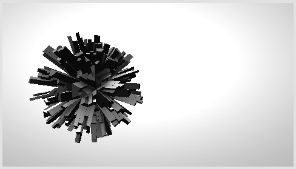

Engi is a dataflow programming editor using HTML5/WebGL
Source code:
Engi is open source and licensed under the MIT license. The source code is released at
https://github.com/engijs/engi
Online demo:
http://engijs.org/
Editing graphs:
Right click on canvas to insert plugins.
Drag connections from inputs and outputs to connect them.
Press
Play to run your graph.
Hold
shift to delete plugins and connections.
Double click to add Presets to the graph.
Click and drag on the canvas to select plugins.
Collapse plugins by clicking on their icon.
Hotkeys:
CTRL-C, CTRL-V, CTRL-X Copy, Paste, Cut
CTRL-B Hide/show Graph tree and info view
CTRL-L Hide/show console.
Space Play/Stop
ESC Toggle fullscreen
Tree view:
This view lists the different subgraphs and loops in your graph. You can click and drag to change their drawing order.
Presets:
If you are using engi on your local computer, you can add your own presets by editing
/presets/presets.json file.
Save/Load:
JSON files get saved to
/data/graphs/.
Textures:
Located in
/data/textures. Have to be .jpg, gif or .png files. Their pixel width and height must be powers of two.
Scenes:
Scenes are converted via
Blender (minimum required version is 2.69). Download the latest blender version and install our converter plugin by copying or linking
/tools/blender/io_engi_export.py to your
[blender]/[version]/scripts/addons path. Remeber to enable the plugin in your user preferences.
Video:
Videos are .ogv files. Converting works with
ffmpeg using these arguments:
ffmpeg -i inputfile.mpg -an -vcodec libtheora -vb 1024k -s 256x256 -aspect 1:1 output.ogv
Audio:
Audio player plays standard .ogg files which can be converted via
Audacity.
Custom shaders:
You can write your own GLSL vertex and pixel shaders using the
Generators/Shaders/From mesh custom shader plugin in Engi. This gives you a code editor, where you can program GLSL and add inputs and outputs using the
+ and
- buttons. You can compile the code using the
Compile button. Read more about custom shaders
here.
Plugin API:
Link to plugin API documentation.